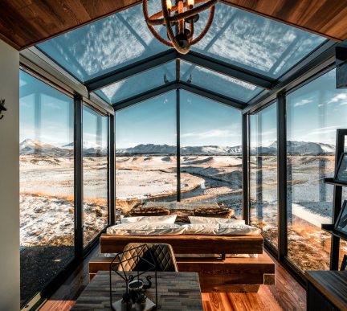
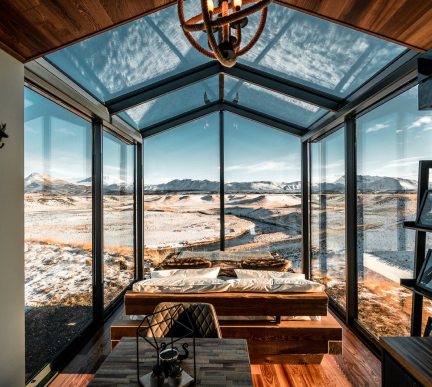

Find peace in the Forest
Come and stay in out hut hotel near Mariager Fjord in Denmark
The Cabins
Løvtag’s three exclusive and comfortable cabins, Et, Ro and Ly, are designed by architect Sigurd Larsen. They all have an open space with a double bed, a double sofa bed, kitchen, separate toilet and an outdoor shower. On the roof, surrounded by treetops, there is a terrace, which is about nine meters above ground. The cottages are built around tall, old trees that go through the entire cottage from floor to ceiling.
Read More

 


The Forest
Løvtag’s three exclusive and comfortable cabins, Et, Ro and Ly, are designed by architect Sigurd Larsen. They all have an open space with a double bed, a double sofa bed, kitchen, separate toilet and an outdoor shower. On the roof, surrounded by treetops, there is a terrace, which is about nine meters above ground. The cottages are built around tall, old trees that go through the entire cottage from floor to ceiling.
Read MoreFacilities

Mini fridge

Kitchenette

Coffee machine

Electric tea